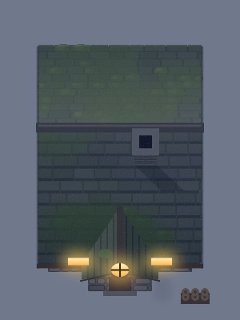
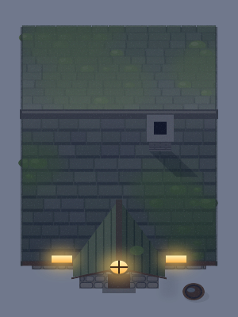
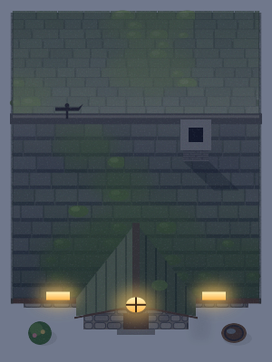
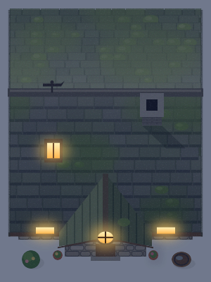
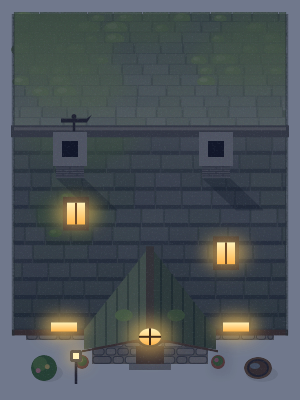
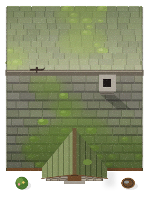
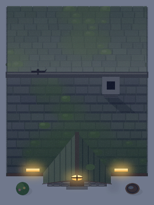
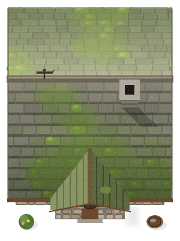
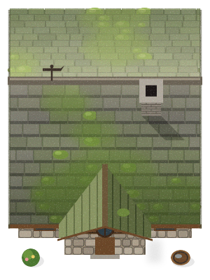
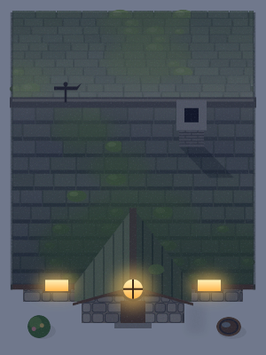

1 farmer lives here.


2 farmers live here.


3 farmers live here.


4 farmers live here.


5 farmers live here.


Tilt 0.2: the front wall shows as a thin strip.


Tilt 0.32: the front wall shows as a narrow band.


Tilt 0.45: the front wall shows as a band you can read.